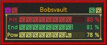

Summary - Frame
There are three types of frames for the summary windows that you can independently change.
Combat
The Combat frame is a red border that appears around the Summary window when your character enters combat mode. These types of frames are used with each style of Summary windows.

HUD
These types of frame are used with the HUD style Summary windows.

Moewen
These types of frame are used with the Moewen style Summary windows.
WOW
These types of frame are used with the WOW style Summary windows.

Note: The above images are only sample styles and other variations are available to choose.